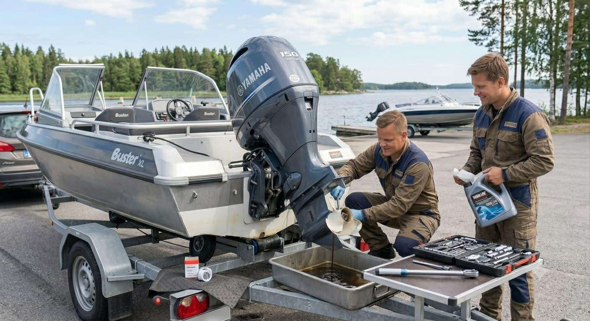
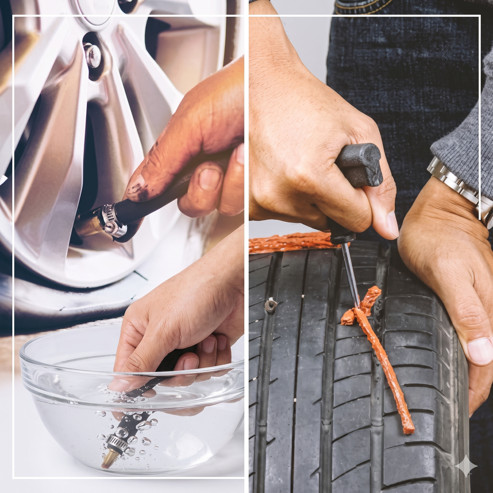

Ammattitaitoista Ford Transit -huoltoa ja korjausta Vantaalla. Luotettavaa palvelua yrityksille ja yksityisasiakkaille.
Vuosikymmenten kokemus Ford Transit -ajoneuvoista
J Tauren Oy on tunnettu erityisesti Ford Transit -pakettiautojen syvällisestä huolto- ja korjausosaamisesta. Pitkä kokemuksemme ja aito intohimomme Fordeihin takaavat, että hyötyajoneuvosi pysyy luotettavasti ajossa.
Osaamisemme ei kuitenkaan rajoitu vain pakettiautoihin. Vuosikymmenten kokemuksemme kattaa laajasti kaikki bensa- ja dieselajoneuvot merkistä ja mallista riippumatta. Olipa kyseessä perheen kakkosauto, määräaikaishuolto tai vaativampi moottoriremontti, meiltä löytyy ammattitaito ja työkalut vian ratkaisemiseen.
Käytössämme on moderni diagnostiikkalaitteisto ja laadukkaat varaosat, joten saat autollesi kerralla oikean korjauksen – ilman ylimääräisiä kuluja tai viivytyksiä.
Tutustu palveluihin

Erikoisosaamisemme on Ford Transit -pakettiautojen huolto ja korjaus, mutta palvelemme kaikkia bensa- ja dieselajoneuvoja merkistä riippumatta. Käytössämme on moderni diagnostiikkalaitteisto ja laadukkaat varaosat — kerralla kuntoon.
Pidämme huolta, että matkasi jatkuu turvallisesti myös vesillä. Tarjoamme asiantuntevaa venehuoltoa, joka kattaa muun muassa perämoottorien kausihuollot, öljynvaihdot ja tekniset korjaukset. Huollamme veneesi ammattitaidolla, jotta voit nauttia veneilykaudesta ilman huolia.


Matka katkesi yllättäen? Ei hätää, J Tauren Oy auttaa myös silloin, kun ongelma iskee kesken ajon. Olipa kyseessä renkaan puhkeaminen, akun hyytyminen tai muu tekninen vika, tulemme paikan päälle ratkaisemaan tilanteen nopeasti ja turvallisesti, jotta pääset jatkamaan matkaasi.
Ota yhteyttä – vastataan nopeasti ja sovitaan sopiva aika.
Ota yhteyttä